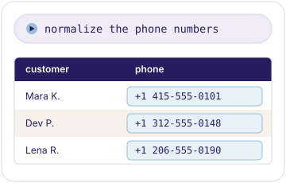
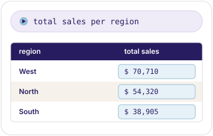

Talk to your data.
Load a spreadsheet, say what you want, and watch it happen. No formulas, no code.
| Phone | Country | |
|---|---|---|
| alice@example.com | +15551234567 | usa |
| bob@example.com | +15559876543 | usa |
| cara@example.com | +15553456789 | usa |
Every common data job, in natural language
Transform large data tables
Normalize, dedupe, filter, join, pivot, and more — by saying what you want.
See everything
See changes as they happen. Nothing is hidden: TamedTable is open source, and runs on your own API keys.
Reuse and automate
Every change saves as steps you replay on new data, or export as a Python script. Works in the browser or on the command line.
How it works
Add API keys
First time you start the app.
Open
A CSV or JSONL, as an URL or a local file.
Say
What you want, in natural language.
Watch
Every row change. Undo anything.
Automate
You just created a recipe, replay it later on new data.
Clean your data
Fix messy fields, drop duplicates, filter, sort, and validate — by saying what you want.

Reshape your data
Aggregate, split, join, pivot, or drop to SQL — just describe the structure you need.

Save and replay
Your steps are yours to keep — replay them on new data, hand them off as a script, or undo anything.
Browser, terminal, voice
Click, type, or speak — use the best UI for the job.